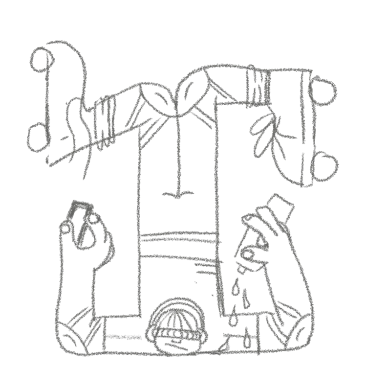
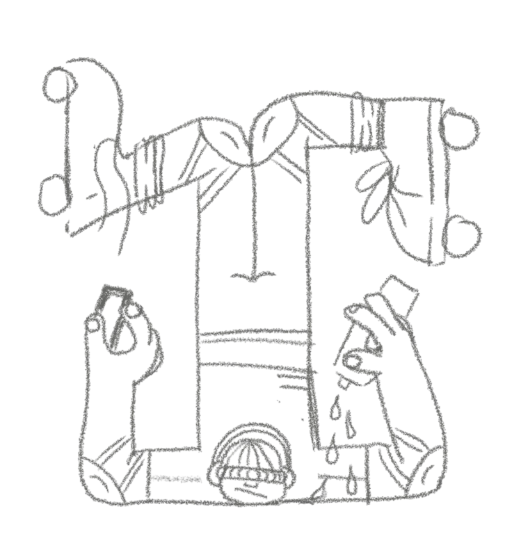
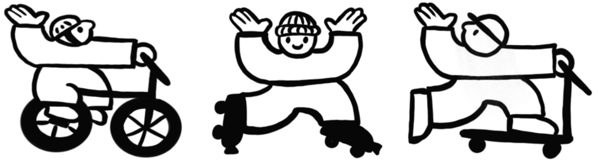
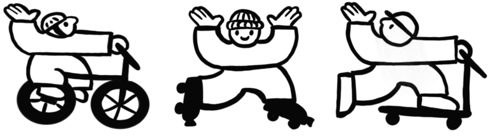

 

VELKOMEN. DU KAN HER SE MINE PROJEKTER JEG HAR LAVET GENNEM MIT FØRSTE SEMESTER, HVAD JEG HAR LÆRT, MINE KOMPETENCER OG MERE OM MIG.
PROJEKTER
-
TEMA 1: INTRO
Dette tema fungerede som en introduktion til multimediedesign-uddannelsen, skolen og de værktøjer, vi arbejder med gennem studiet.
Fokus var på at få overblik over uddannelsens indhold, møde undervisere og medstuderende samt tage de første skridt i arbejdet med digitale designværktøjer som Figma.
SE MERE -
TEMA 2: WEB
I dette tema arbejdede jeg med fundamentet for webudvikling. Fokus var på HTML og CSS, responsivt design, layoutprincipper og grundlæggende webdesign.
Temaet afsluttedes med studiestartsprøven, hvor jeg udviklede et website fra wireframe til færdig løsning.
SE MERE -
TEMA 3: UX/UI
Temaet havde fokus på brugeroplevelse og designprocesser. Jeg arbejdede med research, målgrupper, idéudvikling, wireframes, prototyper og brugertests.
Målet var at træffe designbeslutninger baseret på brugerindsigt frem for antagelser.
SE MERE -
TEMA 4: ANIMATION
I dette tema arbejdede jeg med visuel formgivning og interaktive brugergrænseflader.
Fokus var på Adobe Illustrator, vektorgrafik i SVG, CSS-animationer og introduktion til JavaScript. Temaet kombinerede kreativt design med teknisk implementering.
SE MERE -
TEMA 5: INDHOLD
Tema 5 handlede om indholdsproduktion til digitale platforme. Her arbejdede vi med foto, video, interview, redigering og storytelling samt redesign af et virksomhedssite.
Fokus var på at producere professionelt indhold og forstå samspillet mellem indhold, design og brugeroplevelse.
SE MERE